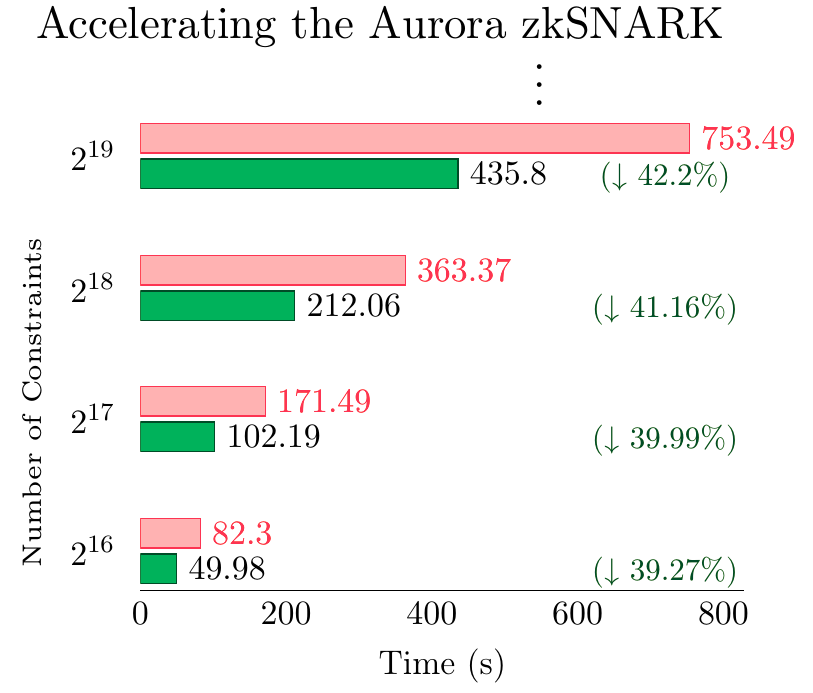
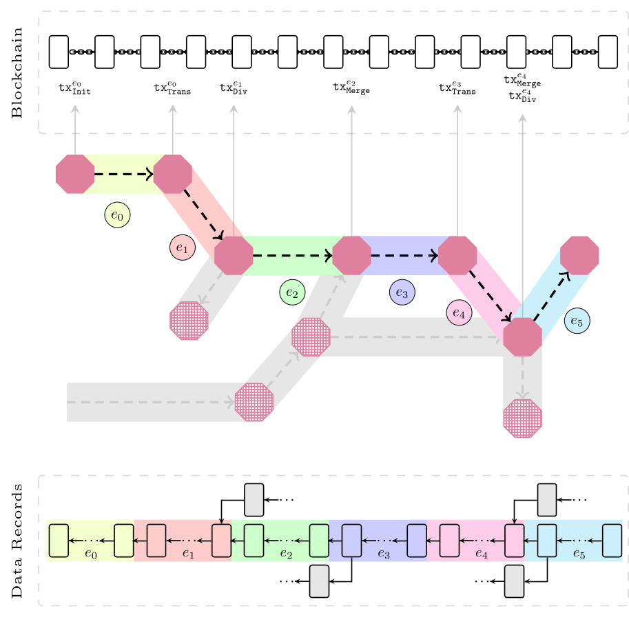

About Me
My name is Mohammadtaghi Badakhshan, but I usually go by Taghi. I got my Ph.D. from the University of Waterloo under the supervision of Professor Guang Gong, with over seven years of research in blockchain technologies and four years of specialization in post-quantum secure zkSNARKs. My research includes accelerating zkSNARK protocols using optimized FFT algorithms in C++ and C, and designing privacy-preserving systems across Ethereum-like blockchains. I enjoy collaborating on open-source cryptographic protocols and am committed to clear, thorough documentation. I have experience leading research projects and organizing both cultural and technical events. Outside of research, I enjoy biking, hiking, camping, and photography.
Education
- Ph.D. in Computer Software Engineering, University of Waterloo (2021–2025)
- Thesis: Accelerating Post-Quantum Secure zkSNARKs and Privacy-Preserving Frameworks.
- M.Sc. in Secure Communication & Cryptography, University of Tehran (2017–2020)
- Thesis: Security Analysis of Lightweight Clients in a Blockchain Based Peer-to-Peer Network.
- B.Sc. in Electrical Engineering, University of Tehran (2013–2017)
- Project: Network Traffic Classification and Industrial Control System (ICS) Intrusion Detection.
Experience
- Intern (MITACS), BTQ Technologies Corp. (2024–2025)
- Led a team consisting of a postdoctoral researcher and a master's student to analyze and accelerate the Aurora post-quantum secure zkSNARK, and prepared technical reports documenting the findings.
- Implemented, optimized and benchmarked additive FFT algorithms in C, C++, and SageMath.
- Reduced Aurora zkSNARK prover runtime by 40% via optimized FFT implementations.
- Research Assistant, University of Waterloo (2020–2025)
- Designed and threat-modeled a privacy-preserving ownership protocol for supply chains on Ethereum, implemented using Aurora and Groth16 zkSNARKs in C++ and Solidity.
- Designed and implemented application-specific zkSNARK circuits in C++.
- Designed an arithmetic circuit for the GKR protocol to enhance efficiency of the Polaris zkSNARK.
- Teaching Assistant, University of Waterloo (2021–2024)
- Conducted tutorial sessions and provided guidance to students for various courses, including Computer Security, Digital Circuits and Systems, Digital Computers, and Digital Computation.
Technical Skills
- Programming Languages: C, C++, Python, Rust, SageMath, Bash, Solidity (Familiar: C#, Java, JavaScript, Verilog)
- Libraries: libff, libiop, libsnark, libsodium, gf2x, bitpolymul, Bitcoin Core, Google benchmark, Google test, Docker, Git
- Tools: Docker, Git, CMake
- Domains: zero-knowledge proofs (Aurora, Groth16, GKR, etc.), post-quantum cryptography (hash-based), abstract algebra, privacy-preserving protocol design, threat modeling, elliptic curve cryptography, and decentralized systems (Familiar: provable security, code-based, and lattice-based cryptogrpahy)
Projects
Accelerating Post-quantum Secure zkSNARKs by Optimizing Additive FFT
By optimizing the additive FFT algorighm using the Cantor special basis, we reduced the Aurora post-quantum secure zkSNARK prover’s runtime by 40%.
Zupply: Anonymously Maintained Decentralized DAG Data Record Over Public Blockchains
The Zupply framework is designed for anonymous and decentralized maintenance of directed acyclic graphs (DAGs) structured authentic data records.
Publications
- [Ph.D. Thesis] Accelerating Post-Quantum Secure zkSNARKs and Privacy-Preserving Frameworks
Mohammadtaghi Badakhshan
University of Waterloo, 2025.[URI] - Accelerating Post-quantum Secure zkSNARKs by Optimizing Additive
FFT
Mohammadtaghi Badakhshan, Susanta Samanta and Guang Gong
Selected Areas in Cryptography (SAC), 2025.[PDF] - Evaluating the Integration of Aurora zkSNARK in the Zupply Framework
Mohammadtaghi Badakhshan and Guang Gong
IEEE/ACM 6th International Workshop on Engineering and Cybersecurity of Critical Systems (EnCyCriS), 2025.[DOI] - Ursa Minor: The Implementation Framework for Polaris
Mohammadtaghi Badakhshan, Guiwen Luo, Tanmayi Jandhyala and Guang Gong
Arithmetic of Finite Fields (WAIFI), 2024.[DOI] - Zupply: Anonymously Maintained Decentralized DAG Data Record Over Public
Blockchains
Mohammadtaghi Badakhshan and Guang Gong
TechRxiv, 2024.[DOI] - Privacy-Preserving Ownership Transfer: Challenges and An Outlined Solution Based on
Zero-Knowledge Proofs
Mohammadtaghi Badakhshan and Guang Gong
IEEE World Forum on Internet of Things (WF-IoT), 2023.[DOI] - Improvement on Bitcoin’s Verifiable Public Randomness with Semi-Trusted
Delegates
Habib Yajam, Elnaz Ebadi, Mohammadtaghi Badakhshan and MohammadAli Akhaee
IEEE International Symposium on Telecommunications (IST), 2018.[DOI]